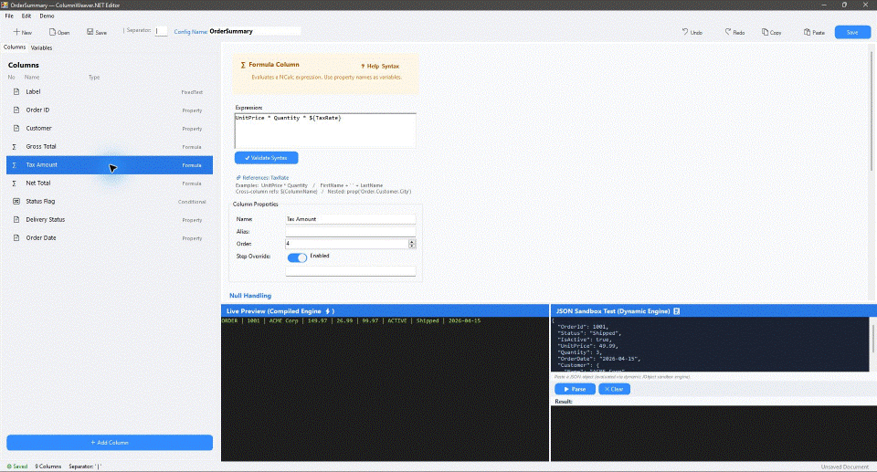

One integration
Add the library to a compatible .NET Framework 4.8 or modern .NET application and reuse its transformation engine across formats.
ColumnWeaver.NET lets a .NET Framework 4.8 or modern .NET (.NET 6/8/9+) application apply reusable formatting schemas to its data. Define columns, calculations, conditions, labels, separators, and value rules per client or product, then run them through the same compiled engine.
For client-specific exports and integrations, including trading and financial software · Targets: .NET Framework 4.8 & .NET Standard 2.0 (.NET 6/8/9+) · NuGet package: ColumnWeaver.NET 1.0.0-beta
When each product or financial-market client asks for a different string layout, teams often copy transformation code or hard-code one more format. ColumnWeaver.NET moves those differences into reusable configuration so the application can keep one transformation implementation while applying the right schema for each client.
Add the library to a compatible .NET Framework 4.8 or modern .NET application and reuse its transformation engine across formats.
Vary field selection, order, labels, separators, formulas, conditions, and formatting rules per customer or product.
Keep client layout differences in configuration instead of cloning and rewriting application conversion logic.
ColumnWeaver.NET handles object-to-string transformation. The host application still owns message transport, protocol rules, persistence, and delivery. Validate each configured output against the receiving system’s contract.
Map flat and nested object properties into a stable output-column order.
Use formulas, cross-column dependencies, typed variables, and conditional columns.
Apply null strategies, culture-aware formats, casing, trimming, padding, prefixes, suffixes, and replacement rules.
Compile a schema for repeated parsing. Use the precompiled/frozen client when the schema is stable.
ParseMany supports forward-only input and returns rows incrementally without buffering the whole input.
Configure pipelines in code or through the WinForms configurator and preview behavior before deployment.
See the complete feature and configurator reference for all five column types, shared per-column controls, supported combinations, and API-only settings. The configurator currently saves/opens JSON; XML serialization is available through the library API. Preserving separator slots for disabled columns is also API-only.

A trading application can reuse the same execution object while each destination selects its own fields, order, labels, conditions, and calculations. The host selects a precompiled schema for the destination; ColumnWeaver.NET formats the object into a string.
See the worked client-specific trading record example for two schemas applied to the same record, installation instructions, and production validation boundaries.
The guide is illustrative. ColumnWeaver.NET returns formatted strings; the application must implement and validate any broker, exchange, FIX, drop-copy, framing, escaping, and delivery requirements.
Yes. Create a reusable ParserConfiguration for each output contract, then apply each configuration to the same source object through a ColumnWeaverClient. The host chooses the client schema; it does not need a separate formatter implementation for each layout.
Move client-specific field selection, order, labels, formulas, conditions, separators, and value rules into configuration. Keep application logic for selecting the destination schema and delivering the resulting string.
ColumnWeaver.NET supports property, formula, conditional, custom-function, and fixed-text columns. Schemas can also use typed variables, earlier-column dependencies, null strategies, format strings, padding, prefixes, suffixes, and replacements. The feature reference lists exact behavior and configurator limits.
No. It is a focused object-to-string formatting engine. It returns a formatted string; the host application owns transport, protocol compliance, persistence, framing, escaping, and delivery.
It offers reusable compiled and precompiled execution paths, but suitability depends on the schema and full application workload. The published benchmarks show hard-coded C# is faster in several scenarios. Measure representative data, allocations, and tail latency before production use.
String interpolation is a good fit for a format fixed in application code. ColumnWeaver.NET is for layouts that vary by client, product, or integration and should be supplied as reusable configuration. It does not replace a general ETL system when data sources, joins, routing, or storage are required.
See the full question guide for implementation, architecture, trading, and package-discovery questions.
BenchmarkDotNet v0.13.12, Windows 11, Intel Core i7-10700F, .NET Framework 4.8.1 x64 RyuJIT. Values are means from the supplied full run; they are not production latency guarantees.
4.4% slower than the equivalent hard-coded baseline, with 57% fewer allocated bytes.
1.2% slower than hard-coded C# and 42% fewer allocated bytes in this scenario.
Steady-state measurement for the benchmark’s property-extraction schema; 80 B allocated per result.
| Scenario | Hard-coded C# | ColumnWeaver | Difference |
|---|---|---|---|
| Property extraction | 95.68 ns | 110.41 ns | +15.4% |
| Formula calculation | 219.50 ns | 281.46 ns | +28.2% |
| Conditional full row | 47.56 ns | 71.68 ns | +50.7% |
| Custom function | 72.16 ns | 189.57 ns | +162.7% |
| Replacement rules | 37.92 ns | 316.18 ns | +733.9% |
| Dependency-heavy row | 1,260.50 ns | 1,275.45 ns | +1.2% |
| 10,000-item batch | 8.13 ms | 8.49 ms | +4.4% |
Hard-coded C# remains faster in several individual scenarios. The benchmark demonstrates the cost of configurable execution for these measured schemas; it does not establish performance for every application, data shape, or tail-latency requirement. See the full BenchmarkDotNet report and harness in the repository.
Reproduce with: dotnet run --project benchmarks/ColumnWeaver.NET.Benchmarks/ColumnWeaver.NET.Benchmarks.csproj -c Release -- --bdn. See the full BenchmarkDotNet report and benchmark harness.
var config = new ParserConfiguration
{
GlobalSeparator = "|",
Columns =
{
new PropertyColumn { Name = "Id", PropertyPath = "Id" },
new FormulaColumn { Name = "Gross", Expression = "UnitPrice * Quantity" },
new ConditionalColumn
{
Name = "Status",
ConditionExpression = "IsActive == true",
TrueValue = "Active",
FalseValue = "Inactive"
}
}
};
var parser = ColumnWeaverClient.CreatePrecompiled(config, typeof(Order));
string row = parser.Parse(order);Install the published ColumnWeaver.NET 1.0.0-beta package from NuGet with dotnet add package ColumnWeaver.NET --version 1.0.0-beta. The package targets .NET Framework 4.8 and .NET Standard 2.0 (compatible with modern .NET 6/8/9+).
The community edition is licensed under GNU AGPL-3.0-or-later. Organizations that need proprietary embedding may request a separate commercial license from the rights holder by emailing Hitesh Bhanushali. Commercial scope, fees, and support terms are not published yet; until an agreement is signed, the AGPL applies.
AGPL is a copyleft license: distributing an application that incorporates the library can bring source-sharing obligations, depending on how the work is combined, and modified network services have additional source-offer duties. The library license does not charge separately for ordinary output strings or records. See commercial licensing notes, the project license, and the full AGPL text.
Concept and project direction: Hitesh Bhanushali. AI-assisted development tools: Codex 6 Luna and Antigravity with Gemini 3.8. The developer reviews and verifies each release; release-specific checks and benchmark details should accompany the published version.